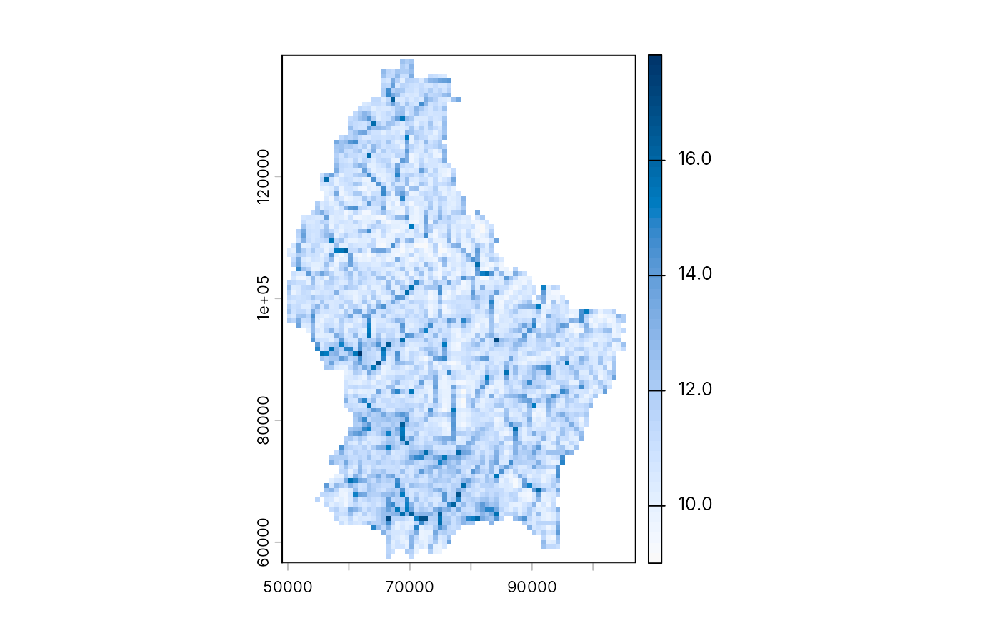

Terrain hydrology: flow direction, accumulation, watersheds and TWI
geo-hydrology.RdD8 hydrology on a digital elevation model, computed in C++ and returned
as terra::SpatRaster layers:
geo_flow_direction(): the steepest-descent neighbour of each cell, coded as in ESRI andterra::terrain()(1 E, 2 SE, 4 S, 8 SW, 16 W, 32 NW, 64 N, 128 NE; 0 for a pit or flat cell);geo_flow_accumulation(): the number of cells (or the sum ofweight) draining through each cell, the cell itself included;geo_watershed(): the catchment above each outlet point, labelled 1, 2, ... in the order ofoutlets;geo_twi(): the topographic wetness index \(\ln(a / \tan\beta)\), with \(a\) the upslope area per unit contour width and \(\beta\) the local slope (Beven and Kirkby 1979).
Pits are not filled: flow stops at a cell with no lower neighbour. Fill
sinks first (for example with whitebox::wbt_fill_depressions()) when
you need continuous drainage across a noisy DEM. On longitude/latitude
rasters, cell sizes are converted to metres at the raster's mid-latitude.
Usage
geo_flow_direction(dem)
geo_flow_accumulation(dem, direction = NULL, weight = NULL)
geo_watershed(dem, outlets, direction = NULL, snap = 0)
geo_twi(dem, direction = NULL)Arguments
- dem
A
terra::SpatRaster(first layer used) or a file path.- direction
Optional D8 layer from
geo_flow_direction(); computed fromdemwhenNULL.- weight
Optional
SpatRasterof per-cell weights (for example rainfall) with the same geometry asdem. Default 1 per cell.- outlets
An
sfpoint table (or a two-column matrix of x, y in the raster's CRS) giving one outlet per watershed.- snap
Search radius in cells: each outlet moves to the cell of highest flow accumulation within this distance, so that a point a little off the stream still finds it.
0(default) keeps it as is.
References
Beven, K. J. and Kirkby, M. J. (1979). A physically based, variable contributing area model of basin hydrology. Hydrological Sciences Bulletin, 24, 43-69. doi:10.1080/02626667909491834
O'Callaghan, J. F. and Mark, D. M. (1984). The extraction of drainage networks from digital elevation data. Computer Vision, Graphics, and Image Processing, 28, 323-344. doi:10.1016/S0734-189X(84)80011-0
Examples
# Real SRTM-derived elevation for Luxembourg, shipped with terra,
# projected to metres (LUREF, EPSG:2169)
dem <- terra::rast(system.file("ex/elev.tif", package = "terra"))
dem <- terra::project(dem, "EPSG:2169")
acc <- geo_flow_accumulation(dem)
outlet <- terra::xyFromCell(acc, terra::where.max(acc)[1, "cell"])
ws <- geo_watershed(dem, outlet)
terra::global(ws, "notNA")
#> notNA
#> watershed 124
twi <- geo_twi(dem)
terra::plot(twi, col = grDevices::hcl.colors(50, "Blues 3", rev = TRUE))
